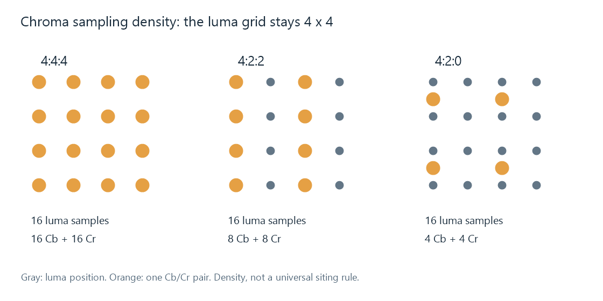

Chroma Subsampling
Fine lettering can reveal a difference that a photograph hides. A narrow edge drawn mainly by a luma change can remain sharp in a 4:2:0 video. A similarly narrow edge distinguished mainly by color may spread or lose its original shape. The video has retained more spatial samples for luma than for color differences.
Chroma subsampling makes that trade: it reduces the Cb and Cr sampling grids of YCbCr video. The luma grid retains its stated picture dimensions. A 1920 × 1080 4:2:0 frame still has 1920 × 1080 luma positions.
In an Emby media report, the sampling format and sample precision describe different aspects of the decoder's input. Interpreting them alongside codec profile explains the actual picture format being delivered to the playback stack.

Orange marks represent Cb/Cr pairs. The diagram illustrates sampling density; chroma siting specifies their exact positions.
What the ratios mean for a frame
For the common rectangular formats below, the middle number describes horizontal chroma density relative to luma. In 4:2:0, chroma is reduced vertically as well. The zero does not mean that a color component is missing or that the second row is monochrome.
| Sampling | Y dimensions | Dimensions of each of Cb and Cr | Component samples in a 4 × 2 patch |
|---|---|---|---|
| 4:4:4 | W × H | W × H | 8 + 8 + 8 = 24 |
| 4:2:2 | W × H | W/2 × H | 8 + 4 + 4 = 16 |
| 4:2:0 | W × H | W/2 × H/2 | 8 + 2 + 2 = 12 |
This table assumes even dimensions and progressive rectangular sample grids. Field-based video also needs its field geometry taken into account when color is reconstructed.
At a fixed sample precision, 4:2:0 contains half as many component samples as 4:4:4. For an unpadded 8-bit 1920 × 1080 decoded frame, that is 3,110,400 bytes rather than 6,220,800 bytes. These are sample-buffer totals. A compressed file's bitrate also depends on its coding decisions and content.
Reduction needs a filter, not just missing columns
Imagine a row of color-difference values that alternates between +0.4 and −0.4. Keeping only every other value could retain all the +0.4 values, or all the −0.4 values, depending on the starting position. The reduced signal would suggest a uniform color bias that was never present in the row's average.
A suitable reduction first filters the signal to control detail that the coarser grid cannot represent, then samples the filtered result. In a simple two-position averaging illustration, each +0.4/−0.4 pair becomes zero. That preserves the pair's neutral average while discarding its fine alternation.
Actual filters have their own response and sample-location conventions. The illustration exposes the underlying choice: some high-frequency color structure must be removed before a lower-density grid can represent the result reliably. Filtering controls which structure is kept and how an edge changes.
Reconstruction supplies color at the missing positions
A display ultimately needs a color for every output position. Its renderer estimates the required Cb and Cr values from the available chroma samples and combines them with luma. Interpolation can create smooth transitions between measured positions, but it cannot identify which of several possible fine source patterns originally produced the same reduced samples.
This is why converting a decoded 4:2:0 picture to a 4:4:4 working buffer increases the number of stored chroma values without recovering the camera's discarded fine color detail. That fuller buffer can still be useful for subsequent processing and compositing.
For example, rendering new subtitle text after color reconstruction can give the text sharper color edges than text already embedded in a 4:2:0 source. If the combined picture is then encoded as 4:2:0, its new colored edges enter the chroma-reduction stage too. The placement of the overlay in the processing path therefore matters.
Precision and spatial density solve different problems
A 10-bit 4:2:0 picture offers finer component-value steps than an 8-bit 4:2:0 picture, with the same chroma-grid dimensions. An 8-bit 4:4:4 picture retains a denser chroma grid, with the same number of available values per component as other 8-bit formats.
These choices affect different features: value precision is particularly relevant to smooth gradients, while chroma density is relevant to fine color structure. The sample-count table and the bit-depth grid measure those two dimensions separately.